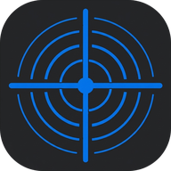
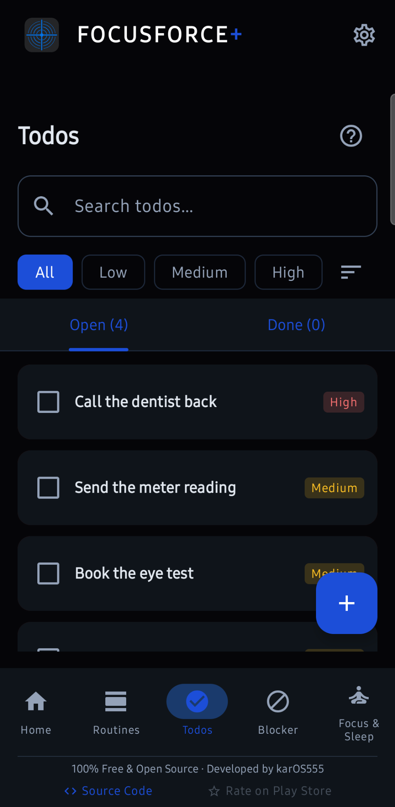
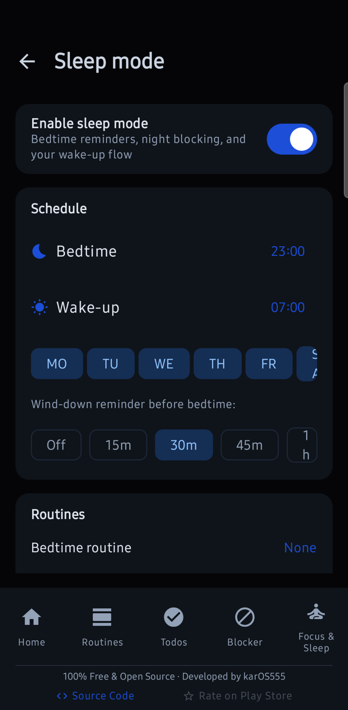
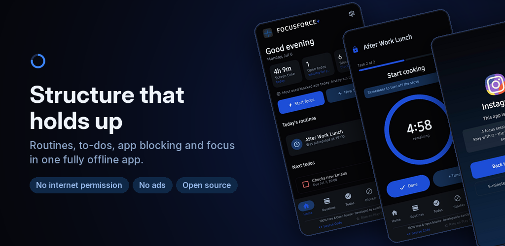

FocusForce+
Morning workout · step 3 of 5
-04:17
Over time, and still counting.
Routines, to-dos, app blocking, focus and sleep mode in one Android app, with reminders that are hard to ignore. When a step runs out, the timer does not stop. It keeps counting, and so do the reminders.
- No internet permission
- No ads, no tracking
- GPLv3, open source
- Android 8.0 and up
What it looks like
Dark by default, built around the thing you are supposed to be doing right now.

Your day at a glance, plus quick actions. 
Multi-step timers that keep counting. 
Priority sets how loud the reminder gets. 
Daily limits, windows and app groups. 
One timed session, Do Not Disturb on. 
Wind-down, night blocking and wake-up.


Why it exists
I built it for myself first, and I use it every day. Nothing I tried before held up once the motivation was gone: everything was a suggestion you could swipe away. So I wrote the thing I actually wanted, where a routine keeps counting past zero, a to-do doesn't quietly disappear, and "just five more minutes" has to get past something first.
Putting it on GitHub came later, but if your brain works anything like mine, it might fit you too. What came out of it is an open source ADHD app for Android, free under the GPL, with no account to make, nothing to buy, and no data leaving your phone.
What's inside
Five things that usually live in five separate apps, plus the two views that tie them together.
-
Routines
Multi-step routines with a real alarm at the start time, a countdown for every step, and a heads-up before each one ends. Run over time and the timer keeps going into the negative and keeps reminding you. The session runs in the background, so leaving the app doesn't quietly freeze it.
-
To-dos
A planner that won't let things quietly slip. Timed to-dos alarm you like a routine does. Loose ones resurface a few times a day. Overdue ones stay pinned until you deal with them, and every item carries a priority that decides how insistent it gets.
-
App blocker
An app blocker without internet permission: blocking happens entirely on the device. Block by a daily time limit, a fixed time window (overnight works too), or automatically during routines and focus sessions. Bundle apps into groups that share one limit and one schedule.
-
Focus mode
One session that turns on Do Not Disturb, silences notifications, and blocks the apps or groups you pick, for a set stretch of time. Start one on the spot or schedule it. An offline focus app that needs no account and no sign-up of any kind.
-
Sleep mode
One nightly schedule: a wind-down reminder, Do Not Disturb, and your distracting apps out of reach until morning. Bedtime and wake-up can each kick off a routine, and it can put backup alarms in your phone's own clock app, so waking up never depends on this one.
-
Dashboard and statistics
Your day at a glance: today's routines and their status, the to-dos that need you next, screen time, and quick actions. Plus a weekly view of routines completed and focus minutes logged.
What makes it different
Four decisions that separate this from the usual blocking app.
-
Invincible Mode is per feature
Most blocking apps give you a single lockdown toggle. Here you turn it on for the individual routine, focus session or blocking rule you actually want to commit to. Lock in the morning workout while leaving everything else flexible. While an invincible thing is active you can't impulsively cancel or weaken it until it reaches its natural end.
-
It's friction, not a trap
You can always uninstall the app from Android settings, and a factory reset always works. The goal isn't to lock you out of your own phone. It's to make bypassing annoying enough that a bad-day version of you doesn't do it for a dumb reason. The app is upfront about this everywhere it matters.
-
Tamper Protection for the settings
An optional second layer. When it's on, loosening your own lock settings only works inside a short daily window you choose, so you can't panic-disable everything in a weak moment.
-
No internet access at all
The app has no internet permission, so your data can't leave the device: there is simply no way for it to be sent. No account, no cloud, no ads, no analytics, no crash reporting. You can export and import everything as a plain JSON file whenever you want.
Install
FocusForce+ isn't on the Play Store yet, so you install the APK directly.
-
Open the latest release
and download the
.apkfile. - Open it on your phone. Android will ask permission to install from this source the first time. Allow it.
- Follow the in-app setup guide. It walks you through the permissions each feature needs and explains what every one is for.
Minimum Android version is 8.0 (API 26).
Because the app has no internet access, it can't check for updates itself. If you want that handled automatically, install it through Obtainium, which watches GitHub releases and updates sideloaded apps for you. Point it at the repository once and it handles the rest: the app stays offline, Obtainium does the checking.
Questions
- Does it need an internet connection?
- No. The app has no internet permission at all, so it cannot send or receive anything. Every feature works offline.
- Is it really free?
- Yes. It is free software under the GNU General Public License v3.0. Nothing to buy, no subscription, no ads, no tracking.
- Why isn't it on the Play Store?
- It is still in public beta and ships as a signed APK attached to each GitHub release. A Play Store submission is planned after a wider testing round.
- Which Android versions work?
- Android 8.0 (API 26) and newer.
- What happens to my data if I switch phones?
- You can export everything to a plain JSON file and import it again on the new device. Nothing is stored anywhere but on your phone.
Privacy
FocusForce+ collects nothing, sends nothing, and shares nothing. Everything you put into it stays on your phone. There are no accounts, no cloud sync, no analytics, no crash reporting, and no advertising. Each permission powers one feature and nothing else.
Full details are in PRIVACY.md.

A note on health
FocusForce+ is a self-help tool for building focus and habits. It is not a medical device and does not diagnose, treat, cure, or prevent ADHD or any other condition, and it is not a substitute for professional care. If you're struggling, please talk to a qualified healthcare professional.